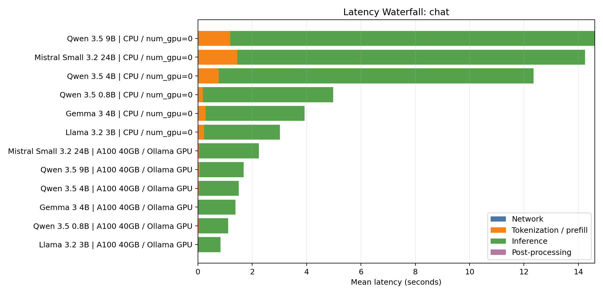

Cost & Energy of Everyday LLM Workloads
Python scripts + notebooks profile local LLM workloads on CPU and NVIDIA A100; attendees can plug in their own endpoints and regenerate every figure.
Generative AI is everywhere, but the real cost and energy impact of everyday LLM calls is usually buried in dashboards and invoices. This poster turns those hidden numbers into clear visuals that Python developers can inspect at a glance.
Built for students, educators, and practitioners who want crisp intuition for what this call really costs, with scripts and notebooks they can rerun on their own endpoints.
Each workload produces a row-level metrics.csv, response log, summary CSV, and poster-ready waterfall, cost, and energy figures.
Latency Waterfall Slices
Models Tried
Llama 4 Scout was skipped for this A100 run because the official Docker Model Runner tag is about 67GB, too large for a clean full-GPU comparison on the 40GB A100.
Run It Yourself
Familiar tools only: pandas, numpy, matplotlib, Docker Model Runner/OpenAI-compatible clients, and NVIDIA NVML when a GPU is present. The open repo includes notebooks for editing workloads, models, and endpoints.
Correction: CPU joules were not measured in the Lightning VM. Treat CPU rows as TDP estimates; measured energy claims should use A100 NVML energy above idle.


Read cost per request next to cost per 1,000 tokens. Compare measured GPU energy separately from CPU estimates.

| Workload / Model | CPU | A100 | Takeaway |
|---|---|---|---|
| Llama 3.2 3B chat | 3.03s / 156J est. | 0.83s / 64J | small models still benefit |
| Mistral 24B summarize | 18.63s / 1188J est. | 1.90s / 465J | GPU changes usability |
| Mistral 24B classify | 1.59s / 96J est. | 0.29s / 11J | short outputs are cheap |
| Nomic batch embed | 0.29s / 8J est. | 0.75s / 13J | batch size matters |

J = (avg watts - idle watts) × seconds.Chat, summarization, labels, RAG ranking, and embeddings stress different parts of the stack.
The A100 made 24B summarization much faster; measured GPU energy is separate from CPU estimates.
Increase batch size before assuming GPU wins.
Open repo + ready-to-run notebooks
Replace this placeholder with a QR code for the public repository before printing.